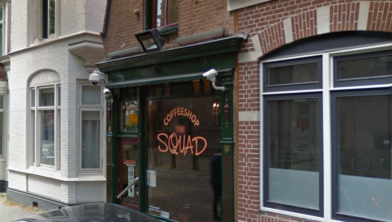
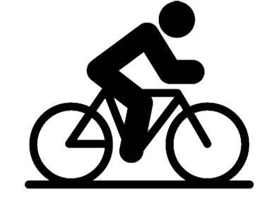
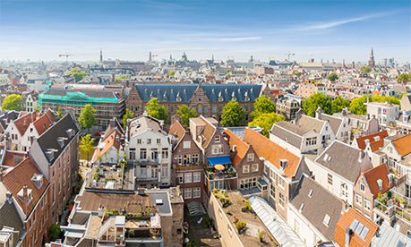

Team Leijdekker
Jiu jitsu training, wedstrijd en gezelligheid in Purmerend
Amsterdam
Waarschijnlijk de bekendste stad in Nederland, Amsterdam! Met ongeveer 900.000 mensen heeft Amsterdam de meeste inwoners en daarmee de grootste gemeente in Nederland. De naam Amsterdam is afkomstig uit de aanlegging van de dam aan de Amstel in de 13e eeuw. De stad is wereldwijd bekend om zijn bezienswaardigheden en attracties. Zoals de vele musea’s die worden bezocht. Met name het Rijksmuseum, het Van Gogh Museum en Het scheepvaartmuseum. Dat is natuurlijk niet het enige waar de stad bekend om staat. De wallen en de coffeeshops zijn het aandachtspunt van velen, want dit word niet in veel plekken in de wereld als normaal gezien
De stad is vrijwel op elke manier wel bereikbaar. Het centraal station in Amsterdam is vrijwel het drukste treinstation van Nederland. Er zijn behalve het centraal station nog negen andere stations. Namelijk: Sloterdijk, Zuid, Amstel, Bijlmer arena, Holendrecht, Lelylaan, Muiderpoort, Rai en Science park. Binnen de stad wordt er vooral gebruik gemaakt van de metro, bus en tram. Het vervoer waar Amsterdam echt bekend om staat is natuurlijk de fiets. Er zijn goede faciliteiten beschikbaar voor fietsers en bijna 40% van de mensen gebruikt dagelijks de fiets.
Amsterdam-Oost
Het multiculturele Amsterdam-Oost staat bekend om de brede straten met 19e-eeuwse gebouwen, het vele groen en het hoge aantal culturele bezienswaardigheden In dit deel van Amsterdam heb je ook keuze te over als het aankomt op shoppen, eten en drinken. Het aanbod varieert van hippe clubs en cafés, traditionele Turkse bakkerijen, Surinaamse supermarktjes tot Midden-Oosterse lunchrooms. Hoogtepunten van deze buurt zijn zonder twijfel het prachtige Oosterpark en het majestueuze Tropenmuseum.

De oostelijke uitbreiding begon in het laatste kwartaal van de 19e eeuw met de ontwikkeling van de Oosterpark buurt en Dapper buurt. Tussen 1920 en 1940 waren er nog extra ontwikkelingen, met als resultaat de Transvaal buurt en de Indische buurt. Vanaf hier werd de toegankelijkheid ook verbeterd door middel van een trein/tram systeem. Van 1939 tot 1942 was Watergraafsmeer gebouwd en later rond 1990 kwamen de oostelijk havengebied, IJburg en Zeeburgereiland er ook bij. Deze buurten worden bestuurd door een gekozen deelraad. In 2007 begon de bouw van de winkel en woonruimte Oostpoort, hier liggen nu een aantal scholen en ook het stadsteelkantoor.
Sport
-
Bij etakki gym kan je jezelf ontwikkelen tot kickboxer. Als een van de vele kickbox gyms heeft deze ook nog fitness apparatuur om nog sterker te worden!

-
De Amsterdam pirates staan bekend als kampioen in honkbal. Ze zijn echter nog altijd op zoek naar nieuwe enthousiaste deelnemers zodat zij nog beter kunnen worden!

-
Iedereen die van een potje voetbal houdt is welkom bij geuzenmiddenmeer. Het is een voetbalclub voor jong en oud met elke week wedstrijden tegen andere clubs!

-
Albatros volleybal vereniging in Amsterdam is een leuke en gezellige club voor zowel mannen als vrouwen. Elke jaar zal je tegen een andere club strijden voor de beker!

-
Basketball is nog steeds een van de beroemdste sporten van de wereld en flying oost laat zien waarom dat is. Flying oost traint elke week meerdere malen om beter te worden!

-
HC Athena is een hockey vereniging voor zowel man als vrouw. Elke week word er getraind en wedstrijden gespeeld tegen andere clubs!

-
De meer tennis is een tennis club voor jong en oud en vooral voor je plezier. Beginners worden opgeleid tot tennis meesters!

-
Badminton vereniging zeeburg is er voor iedereen die van badminton houdt. Of je nou net begint of al bevorderd bent. Wees welkom om je daar bij aan te sluiten!

-
Brazilian jiu jitsu is een zelfverdedigingssport en bij team Leijdekker in Purmerend kan je in een bijzonder slim systeem van beweging gebruik maken van de zwakke punten van je tegenstanders!

-
Bij fitness oostergym kan je op verschillende manieren gebruik maken van alle fitness apparatuur. Wil je aan je spierkracht, gewicht en/of conditie werken dan ben je hier van harte welkom!

Amsterdam